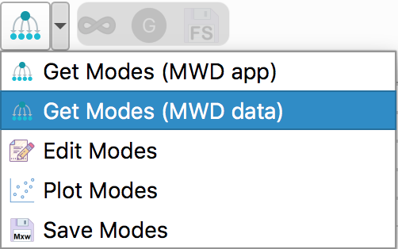
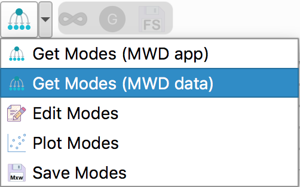
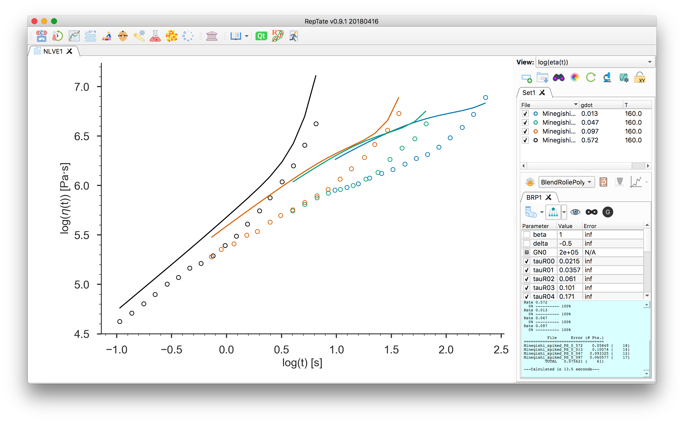
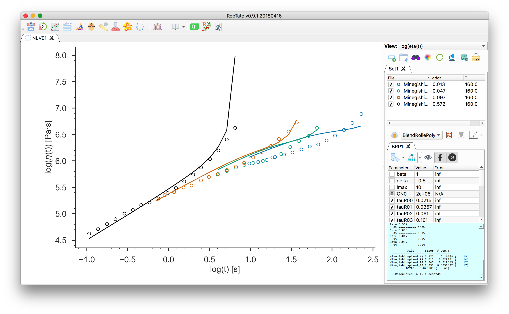

Tutorial Blend of Rolie-Poly¶
Nonlinear flow prediction
Start RepTate and create a new NLVE Application
 :
:
Drag and drop shear (
.shear) or uniaxial extension (.uext) data files, e.g. all theMinegishi_spiked_PS_***.uextfiles from the folderdata/NLVE_Extension/. These are the uniaxial extension data for the PS686 spiked with 1.5% long chains from [1]The first column of the file should contain the time and the second column the stress (shear, or tensile, stress growth function).

Select the “BlendRoliePoly” theory and press
 to create it.
to create it.
At this point, you need to setup the relaxation times, \(\tau_i\), and weights, \(g_i\), for each mode \(i\). You can:
Input them manually by clicking:

then select the number of modes, enter the values and click “OK”.
Obtain an estimate of the linear rheology (i.e. the set of \(\tau_{\mathrm{d},i}\)) from a the molecular weight distribution (MWD). In this case, for each molecular mass mode, a reptation time is assigned. For a molecular mass mode \(M_i\), the corresponding relaxation time is estimated as \(\tau_{\mathrm{d},i} = 3 Z_i^3 f_{\mu,i} \tau_\mathrm{e}\) where \(Z_i = M_i/M_\mathrm{e}\), \(M_\mathrm{e}\) the entanglement molecualar mass, \(\tau_\mathrm{e}\) the entanglement relaxation time, and \(f_{\mu,i}\) the contour length fluctuation (CLF) correction.
Note
This works, broadly, within the “dynamic dilution” picture of tube dynamics, which considers that the effective “tube” constraint felt by a given test chain depends on the timescale of the motion being considered. After relaxation of shorter chains, they release their entanglements on longer chains and so, in some sense, act as “solvent” for the longer chains. Here, we consider repation along the thin tube, and CLF commensurate with the diluted tube (which speeds up the terminal relaxation because CLF shortens the distance required to reptate).
The stretch relaxation times are calculated as \(\tau_{\mathrm{s},i} = Z_i^2 \tau_\mathrm{e}\).
It is possible to import the MWD form an open MWD application, or by copy-pasting MWD data into a table. In this tutorial we will use the latter method.
To import the MWD form by copy-pasting MWD data, click right arrow of
 and select
:
and select
:Select the number of molecular mass modes and provide the entanglement molecualar weight and entanglement relaxation time, respectively \(16\,625\) g/mol and \(3.4 \times 10^{−3}\) s at 160 \(^\circ\mathrm{C}\). We use the 21 modes MWD provided in [2] and paste it in the table:
\(M\) \(\phi\) 11500 0.00276 14800 0.00413 19200 0.00649 24800 0.009 32300 0.0133 41800 0.0214 53900 0.031 70400 0.0452 90800 0.0648 118000 0.0862 148000 0.107 196000 0.119 255000 0.12 329000 0.11 426000 0.0929 539000 0.0691 696000 0.0462 915000 0.027 1210000 0.0138 1570000 0.00545 3200000 0.0152 that we select, copy, and paste in the table:

Click “OK” to close the dialog. This launches the calculations of the relaxation times. You can look at the result by clicking
 .
.Adjust the parameter
GN0. We set it to \(2\times 10^5\) Pa. Then, press “calculate” to get the nonlinear rheology predictions.
to get the nonlinear rheology predictions.The calculations can be done using “infinitely stretching chains”
 or with finite extensibility
or with finite extensibility  . In the latter case, the maximum extensibility
parameter
. In the latter case, the maximum extensibility
parameter lmaxis present in the parameter table. You can change its value and click “calculate” to update the theory
predictions.Finally, it is possible to correct the modulus (given as the parameter
GN0) by clicking . The stress of each species \(i\) is corrected by a factor \(f_{\mu,i}^{1/2}\)
(see Chapter 6 of [3]).
Note that this option is only available if the relxations times were given via MWD.
Click “calculate” to update the theory predictions:
. The stress of each species \(i\) is corrected by a factor \(f_{\mu,i}^{1/2}\)
(see Chapter 6 of [3]).
Note that this option is only available if the relxations times were given via MWD.
Click “calculate” to update the theory predictions:
{kind=link}
{kind=link}
{kind=link}
{kind=link}
{kind=link}
Note
The minimisation procedure is inactive in this theory.
| [1] | Akinari Minegishi, Akihiro Nishioka, Tatsuhiro Takahashi, Yuichi Masubuchi, Jun-ichi Takimoto, and Kiyohito Koyama. Uniaxial elongational viscosity of PS/a small amount of UHMW-PS blends. Rheol. Acta, 40(4):329–338, jul 2001. doi:10.1007/s003970100165. |
| [2] | S.D. Mishler and D.W. Mead. Application of the MLD “toy” model to extensional flows of broadly polydisperse linear polymers: Part II. Comparison with experimental data. J. Nonnewton. Fluid Mech., 197:80–90, 2013. doi:10.1016/j.jnnfm.2012.12.009. |
| [3] | John M Dealy, Daniel J Read, and Ronald G Larson. Structure and rheology of molten polymers: from structure to flow behavior and back again. Carl Hanser Verlag GmbH & Co. KG, München, feb 2018. ISBN 978-1-56990-611-8. doi:10.3139/9781569906125.fm. |